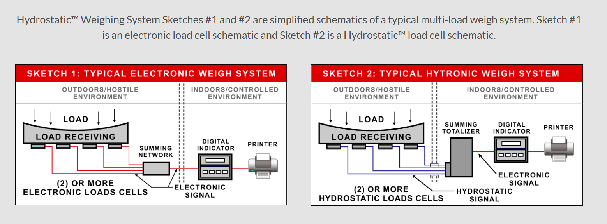

Môi trường khắc nghiệt
Cân thủy tĩnh và loadcell điện tử: hai hệ thống cân so sánh như thế nào
Cùng một bồn trên cùng một chân đỡ — hai cách cân khác nhau. Sketch 1 cho thấy hệ thống điện tử; Sketch 2 cho thấy hệ thống thủy tĩnh. Bài viết này chỉ ra điểm khác nhau, và ý nghĩa của nó trong môi trường khắc nghiệt.

Một hệ thống cân nhiều loadcell có cùng một nhiệm vụ trong cả hai bản vẽ: cân tải trọng trên khung đỡ tải và báo về chỉ thị số và máy in. Điểm khác nhau là thứ gì nằm ngoài trời, trong môi trường khắc nghiệt, và loại tín hiệu nào đi vào trong nhà. Sketch 1 là sơ đồ loadcell điện tử và Sketch 2 là sơ đồ loadcell Hydrostatic™ — các bản vẽ là của chính Emery Winslow Scale.

Đường tín hiệu, đặt cạnh nhau
Đọc hai bản vẽ từ trái sang phải: tải trọng, loadcell, tín hiệu, chỉ thị.
| Hệ thống cân điện tử (Sketch 1) | Hệ thống cân thủy tĩnh (Sketch 2) | |
|---|---|---|
| Loadcell | (2) loadcell điện tử trở lên dưới khung đỡ tải | (2) loadcell thủy tĩnh trở lên dưới khung đỡ tải |
| Tín hiệu từ loadcell | Tín hiệu điện tử — cáp từ mỗi loadcell về mạng cộng tín hiệu | Tín hiệu thủy tĩnh — đường ống dẫn chất lỏng từ mỗi loadcell về bộ cộng tín hiệu (khung lực) |
| Trong nhà | Chỉ thị số và máy in, nhận trực tiếp tín hiệu điện tử | Bộ chuyển đổi (đầu ra mV) đổi tín hiệu thủy tĩnh thành tín hiệu điện tử cho chỉ thị số và máy in |
| Thứ nằm trong môi trường khắc nghiệt | Cảm biến biến dạng, cáp và bo mạch cộng tín hiệu | Loadcell thủy tĩnh kín và đường ống dẫn chất lỏng — không có điện tử tại điểm cảm biến |
| Nước, sét hay xung điện đánh vào đâu trước | Cảm biến và mạch điện tử, đúng tại nơi chịu tải | Thân loadcell kín và đường ống; mạch điện tử nằm trong nhà, trong môi trường kiểm soát |
| Cấu tạo cảm biến | Một phần tử kim loại đàn hồi với cảm biến biến dạng dạng lá dán trên đó, mắc thành cầu Wheatstone | Một “viên nang” áp suất kín khít: piston và màng ngăn trên một buồng chứa chất lỏng — hoàn toàn không có phần tử điện |
| Hộp nối & cáp | Một hộp nối (hộp cộng tín hiệu) tại điểm cân, căn chỉnh góc, và cáp tín hiệu chạy thẳng về đầu cân | Đường ống chất lỏng về bộ totalizer cộng áp — không kết nối điện nào ngoài trời |
| Vật liệu thân loadcell | Thép hợp kim hoặc inox; có phiên bản hàn kín | Inox (304 tiêu chuẩn), với các tùy chọn 316, titan, Monel và Hastelloy cho môi trường ăn mòn |
| Bảo trì thường xuyên | Hiệu chuẩn và kiểm tra góc, kiểm tra hộp nối và cáp, thay loadcell theo kế hoạch trong môi trường khắc nghiệt | Rất ít tại điểm cân; bảo trì tập trung ở bộ totalizer, transducer và đầu cân đặt trong nhà |
Bên trong hai cảm biến
Hãy bắt đầu từ chính phần tử cảm biến, vì mọi điều còn lại trong bài so sánh này đều bắt nguồn từ cách mỗi loadcell được cấu tạo.
Loadcell thủy tĩnh là một “viên nang” áp suất. Trong thiết kế của Emery Winslow, tải trọng đè lên một piston, piston ép lên một buồng kín chứa chất lỏng được đóng bằng một màng ngăn. Áp suất hình thành trong chất lỏng tỉ lệ chính xác với tải trọng, và chính áp suất đó — không phải tín hiệu điện — là đầu ra của loadcell. Cấu tạo thay đổi theo nhiệm vụ: dòng 120 dùng màng ngăn bằng vải mà thợ cơ khí của nhà máy có thể thay thế nếu loadcell bị hư hỏng do tải ngang nghiêm trọng, trong khi dòng 136 lớn hơn dùng màng ngăn inox hàn cố định. Bên trong không có cảm biến, dây điện hay mạch điện tử nào; loadcell, theo đúng lời của nhà sản xuất, hoàn toàn không điện tử.
Loadcell điện tử là một dụng cụ đo. Một phần tử đàn hồi kim loại được gia công chính xác uốn cong một lượng rất nhỏ và lặp lại được dưới tải trọng; các cảm biến biến dạng dạng lá dán trên nó thay đổi điện trở khi giãn ra và nén lại; cầu Wheatstone biến sự thay đổi đó thành tín hiệu milivôn. Các cảm biến, lớp keo dán, dây dẫn bên trong và cửa cáp đều là một phần của loadcell — và tất cả đều sống ở nơi có tải trọng: dưới bồn, trong hố cân, dưới mặt cầu cân.
Hộp nối và cáp: những gì bản vẽ đã giản lược
Sketch 1 vẽ mạng cộng tín hiệu của hệ thống điện tử thành một hộp duy nhất. Trên một hệ thống cân thật, đó là một hạng mục điện nhỏ ngay tại điểm cân: một hộp nối (hộp cộng tín hiệu) nơi cáp của từng loadcell được đấu vào, các phần tử căn chỉnh cân bằng các góc với nhau, gioăng và nút bịt tại mỗi cửa cáp, và cáp chạy thẳng mang tín hiệu milivôn về đầu cân. Mỗi chi tiết đó là một nơi nước có thể len vào, và một kết nối có thể ăn mòn, lỏng ra, hoặc dẫn xung sét từ điểm cân vào. Cáp sáu dây có dây cảm biến (sense) và thiết bị chống xung sét làm giảm các rủi ro đó; chúng không loại bỏ được các phần tử.
Phần tương đương của thủy tĩnh trong Sketch 2 là một tuyến ống chất lỏng về bộ totalizer cộng áp. Đường ống không chứa kết nối điện để ăn mòn, không mang tín hiệu nào để xung sét “đi nhờ”, và có thể bị xối rửa, chôn ngầm hay ngâm nước cùng với loadcell. Lần chuyển đổi điện tử duy nhất của hệ thống — transducer biến tổng áp suất thành tín hiệu milivôn cho đầu cân — diễn ra trong nhà, tại bộ totalizer.
Điểm hỏng nằm ở đâu
Hệ thống điện tử đặt bộ phận nhạy cảm nhất đúng tại nơi hư hại xảy ra: dưới bồn, trong hố cân, dưới mặt bàn cân xe. Nước, ngập, sét và ăn mòn phá loadcell điện tử — các câu chuyện ứng dụng đã công bố cho thấy quy luật: rửa áp lực cao mỗi đêm tại Plumrose và Morgan Foods, hố cân ngập nước tại Boar’s Head, sét tại Rogers Group và Redland Stone.
Trong hệ thống thủy tĩnh, điểm cảm biến hoàn toàn không có điện tử: loadcell kín và đường ống dẫn chất lỏng. Nhà sản xuất cho biết loadcell thủy tĩnh của họ hoàn toàn không dùng điện tử và được bảo hành chống hỏng do nước, rửa áp lực cao, ngưng tụ, ẩm, ngập, xung điện, tĩnh điện, xung hàn và sét (câu chuyện Plumrose). Các mạch điện tử còn lại — bộ chuyển đổi, chỉ thị số — nằm trong nhà, trong môi trường kiểm soát.

Từng môi trường một
Rửa áp lực. Nước áp lực cao và hoá chất tẩy rửa là việc hằng ngày ở nhà máy thực phẩm, đồ uống và nuôi trồng thủy sản. Với hệ thống điện tử, mỗi lần rửa là một lần thử thách gioăng hộp nối và nút bịt cáp; hư hỏng chỉ là vấn đề số chu kỳ. Loadcell thủy tĩnh không có gioăng nào để thử thách — rửa áp lực nằm trong danh mục bảo hành trọn đời của Emery Winslow.
Ngập và ngâm nước. Hố cân đầy nước vào mùa mưa; một số bể đứng trong nước thường trực. Loadcell điện tử đạt chuẩn ngâm nước có tồn tại, nhưng cáp và hộp nối của chúng phải đạt cùng chuẩn và được lắp đặt đúng chuẩn đó, và một nút bịt hỏng là đủ làm ngập cả mạng cộng tín hiệu. Loadcell thủy tĩnh làm việc khi ngâm nước — tại SeaWorld, ngâm thường trực — vì áp suất nước bên ngoài một “viên nang” áp suất không thay đổi gì bên trong nó.
Sét và xung điện. Một cầu cân là một kết cấu kim loại lớn có dây nối về nhà xưởng: một đường dẫn xung theo đúng thiết kế. Thiết bị chống xung sét chuyển hướng phần lớn năng lượng, nhưng phần còn lại chạm tới chính chuỗi điện tử — loadcell, hộp nối, đầu cân. Trong hệ thống thủy tĩnh, tuyến ngoài trời là một đường ống chất lỏng; hoàn toàn không có đường điện nào từ điểm cân về nhà xưởng, và hư hỏng do sét đối với loadcell, một lần nữa, nằm trong danh mục bảo hành.
Ăn mòn và hoá chất. Bụi phân bón, axit bắn tóe, nước muối và không khí ven biển tấn công cách điện cáp, đầu nối và thân loadcell. Tùy chọn inox và hợp kim có ở cả hai phía (xem mục Vật liệu bên dưới); khác biệt nằm ở số lượng chi tiết phơi lộ — một “viên nang” và đường ống, hay một cảm biến cỡ viên nang cộng cáp, nút bịt và hộp cộng tín hiệu của nó.
Bụi và mài mòn. Bụi xi măng và bụi mỏ đá dẫn điện, mài mòn và có mặt ở khắp nơi. Nó hại hệ thống điện tử chủ yếu bằng cách len vào vỏ tủ và bám lên các kết nối; nó không hại gì được loadcell thủy tĩnh, vì không có gì để len vào.
Khu vực nguy hiểm cháy nổ. Nơi có thể xuất hiện khí hay bụi dễ cháy, câu hỏi đúng là về chứng nhận — của đúng thiết bị đó, cho đúng phân vùng đó — chứ không phải khẩu hiệu công nghệ. Loadcell thủy tĩnh không chứa năng lượng điện tại điểm cảm biến, điều đó loại bỏ chiếc cân khỏi vai trò nguồn gây cháy; điều đó có nghĩa là gì, và không có nghĩa là gì, được trình bày tại trang dầu khí & LPG của HearS. HearS không tuyên bố bất kỳ chứng nhận chống cháy nổ nào cho thiết bị này, vì chưa có chứng nhận nào được kiểm chứng cho nó.
Một hệ thống, nhiều loadcell
Sketch 3 cho thấy cùng ý tưởng với bốn loadcell (D1, C1, B1, A1) dưới một khung đỡ tải: đường tín hiệu thủy tĩnh từ mỗi loadcell chạy về một bộ cộng tín hiệu trên khung lực, rồi bộ chuyển đổi (đầu ra mV) đưa tín hiệu về chỉ thị số và máy in. Thêm loadcell không thêm điện tử ngoài trời — phần ngoài trời vẫn chỉ là loadcell kín và đường ống.
Lắp đặt và hiệu chuẩn: phần việc chung
Cả hai bản vẽ đều không vẽ nền móng, và cả hai hệ thống đều thành hay bại ở nền móng. Một bồn chứa phải được tự do đặt toàn bộ khối lượng của nó lên các loadcell — đường ống nối phải có đoạn mềm, chân đỡ phải phẳng, lực ngang và giãn nở nhiệt phải được tính trước. Một cầu cân cần đường dẫn vào thẳng và hố cân hoặc thoát nước tốt, hoặc được thiết kế chống ngập một cách có chủ đích. Làm sai phần cơ khí thì công nghệ nào cũng cân sai; làm đúng thì cả hai đều cân tốt.
Phần việc lắp đặt khác nhau về bản chất. Hệ thống điện tử cần tuyến cáp được bảo vệ khỏi xe cộ và chuột gặm, hộp nối lắp ở vị trí với tới được và giữ kín, và căn chỉnh góc khi chạy thử. Hệ thống thủy tĩnh cần tuyến ống được bảo vệ như đường ống công nghệ, một vị trí đặt totalizer trong nhà, và nạp đầy, xả khí đường ống đúng cách khi chạy thử. Phần việc của HearS trong cả hai trường hợp là như nhau: khảo sát hiện trường, thiết kế cơ khí, lắp đặt, chạy thử và kiểm định bằng quả cân chuẩn trước khi bàn giao.
Cuối cùng, hiệu chuẩn không phải điểm khác biệt giữa hai công nghệ. Cả hai đều được căn chỉnh và kiểm định bằng quả cân chuẩn hoặc thiết bị tham chiếu đã hiệu chuẩn, cả hai đều trôi số nếu cơ khí xung quanh thay đổi — một thanh giằng bị cong hay một mặt bích ống được siết lại đều làm số đọc của bất kỳ hệ thống nào dịch chuyển — và cả hai đều thuộc về lịch hiệu chuẩn của nhà máy. Khác biệt nằm ở những gì lịch đó còn phải bao phủ: với hệ thống điện tử là sức khỏe của toàn bộ chuỗi điện; với hệ thống thủy tĩnh, về cơ bản chỉ là các thiết bị trong nhà.
Các bản vẽ không cho thấy điều gì
Không bản vẽ nào cho thấy lắp đặt, hiệu chuẩn hay bảo trì — cả hai hệ thống đều cần cả ba, làm đúng cách. Hệ thống thủy tĩnh vẫn cần bộ chuyển đổi và chỉ thị trong nhà, và một công trình khô ráo, môi trường kiểm soát vẫn có thể cân tốt bằng loadcell điện tử. Các bản vẽ chỉ trả lời một câu hỏi: điều gì xảy ra khi môi trường trở nên khắc nghiệt — và đó là câu hỏi cần đặt ra đầu tiên khi hệ thống cân sẽ bị rửa áp lực, ngập nước hay sét đánh.
Độ chính xác, đáp ứng và dải tải
Khi được lắp đặt đúng, cả hai công nghệ đều cân đủ chính xác cho thương mại và kiểm soát quy trình, và cả hai đều được kiểm định cùng một cách: bằng quả cân chuẩn, theo lịch hiệu chuẩn. Tính cách của chúng khác nhau. Hệ thống thủy tĩnh đo áp suất, mà áp suất không trôi như cảm biến biến dạng và cáp của nó có thể trôi — sự ổn định dài hạn đó là lý do loadcell thủy tĩnh ở lại phục vụ hàng chục năm. Hệ thống điện tử đáp ứng gần như tức thì, nên nó là lựa chọn tự nhiên cho cân tốc độ cao và cân động. Về dải tải, Emery Winslow cung cấp các hệ thống cân thiết bị chứa thủy tĩnh từ khoảng 1.000 lb đến 1.000.000 lb; loadcell điện tử bao phủ dải tải tổng thể rộng nhất trong ngành cân, từ gram phòng thí nghiệm đến các mức tải công nghiệp nặng.
Vật liệu: thân loadcell làm bằng gì
Vì loadcell thủy tĩnh là một bình áp lực đơn giản, thân của nó có thể được chọn theo hoá chất xung quanh. Emery Winslow chế tạo loadcell thủy tĩnh bằng inox — mác 304 là tiêu chuẩn — với các tùy chọn inox 316, titan, Monel và Hastelloy cho môi trường ăn mòn: đúng các tùy chọn mà HearS liệt kê cho dịch vụ dầu khí và hoá chất. Vật liệu chính xác được xác nhận trong báo giá cho nhiệm vụ cụ thể; điểm mấu chốt là không có gì trong cấu tạo của loadcell ngăn cản điều đó.
Loadcell điện tử được chế tạo từ thép hợp kim hoặc inox, với vùng cảm biến biến dạng được bảo vệ bằng chất trám (potting), ống xếp (bellows) hoặc hàn kín. Một loadcell điện tử inox hàn kín thực sự chịu được nước. Giới hạn thực sự nằm ở hệ thống quanh loadcell: cáp, nút bịt cửa cáp và hộp nối vẫn là các điểm hỏng thường gặp trong môi trường ẩm ướt, bất kể thân loadcell làm bằng gì.
Bảo trì trong thực tế
Hệ thống thủy tĩnh đòi hỏi rất ít tại điểm cân: không có gì để hiệu chuẩn lại tại loadcell, không căn chỉnh góc ngoài trời và không chu kỳ thay loadcell. Bảo trì tập trung trong nhà — bộ totalizer, transducer của nó và đầu cân — cộng với kiểm tra định kỳ đường ống có nguyên vẹn không, và kiểm định bằng quả cân chuẩn theo lịch hiệu chuẩn thông thường của nhà máy. Nếu màng ngăn vải của dòng 120 bị hư hỏng, thợ cơ khí của nhà máy thay được; và Emery Winslow bảo hành chính các loadcell trọn đời trước hư hỏng do nước, ngập, độ ẩm, rửa áp lực, sét và xung điện.
Hệ thống điện tử đòi hỏi một quy trình: hiệu chuẩn và kiểm tra góc theo lịch, kiểm tra hộp nối và cách điện cáp, giữ hố cân khô ráo và hộp nối kín — và, trong môi trường khắc nghiệt, thay loadcell theo kế hoạch khi chúng trôi số hay hỏng, với hàng dự phòng đúng chủng loại và mức tải đã lắp. Không điều nào trong số đó là vô lý, và trong một nhà máy khô ráo cái giá đó rất nhỏ. Trong một nhà máy ẩm ướt, ăn mòn hay nhiều sét, đó là một chi phí lặp lại thuộc về bài so sánh ngay từ đầu.
Giới hạn của cả hai công nghệ
Không công nghệ nào tốt hơn một cách tuyệt đối, và một bài so sánh đáng tin cần ghi nhận điều đó ngay từ đầu.
Giới hạn của thủy tĩnh. Hệ thống vẫn kết thúc bằng điện tử — một transducer và một đầu cân cần một nơi sạch, khô trong nhà. Đường ống chất lỏng phải được đi tuyến và bảo vệ như mọi đường ống khác. Chi phí đầu tư ban đầu thường cao hơn một hệ thống điện tử cơ bản; cân động tốc độ rất cao là sân nhà của hệ thống điện tử; và cân thủy tĩnh là một công nghệ chuyên biệt đến từ một số ít nhà sản xuất, với Emery Winslow là tên tuổi hàng đầu.
Giới hạn của điện tử. Điểm cảm biến là điện, nên môi trường tấn công chính phép đo: hơi ẩm xâm nhập, ăn mòn, hư hỏng do xung điện và sét, trôi tín hiệu, và tuổi thọ loadcell hữu hạn trong môi trường khắc nghiệt. Độ chính xác phụ thuộc vào toàn bộ chuỗi — loadcell, cáp, hộp nối, đầu cân — cùng khỏe mạnh, và bảo trì là một khoản chi thường trực chứ không phải thỉnh thoảng.
Hệ thống nào hợp với công trình của Quý khách?
Nếu hệ thống cân sẽ đối mặt với rửa áp lực, ngập, ngưng tụ, sét hay khu vực nguy hiểm, hãy bắt đầu từ hệ thống thủy tĩnh — rồi xác nhận phạm vi, giao diện và hồ sơ cùng HearS. Nếu môi trường khô và kiểm soát được, hệ thống điện tử có thể là lựa chọn phù hợp, và HearS sẽ nói rõ như vậy. Dù chọn hệ thống nào, báo giá cũng xác nhận phạm vi, tiến độ và tiêu chuẩn áp dụng.
Đọc tiếp
Môi trường khắc nghiệt là gì đối với một hệ thống cân?
Định nghĩa dễ hiểu về môi trường khắc nghiệt và môi trường nguy hiểm đối với cân công nghiệp: rửa áp lực, ngập…
Đọc bài viết: Môi trường khắc nghiệt là gì đối với một hệ thống cân?Cân thủy tĩnh cho môi trường khắc nghiệt — HearS thực hiện tại Việt Nam
Loadcell Hydrostatic™ của Emery Winslow Scale (dòng 120 và 136 LifeMount) xử lý rửa áp lực, ngập nước, sét và …
Đọc bài viết: Cân thủy tĩnh cho môi trường khắc nghiệt — HearS thực hiện tại Việt NamGiải pháp cân công nghiệp cho môi trường khắc nghiệt
Trang giải pháp của HearS: định nghĩa, câu chuyện ứng dụng và công nghệ Hydrostatic™.
Đọc bài viết: Giải pháp cân công nghiệp cho môi trường khắc nghiệt
Quý khách cần hỗ trợ về việc này?
Hãy cho chúng tôi biết ứng dụng của Quý khách, chúng tôi sẽ phản hồi qua email.